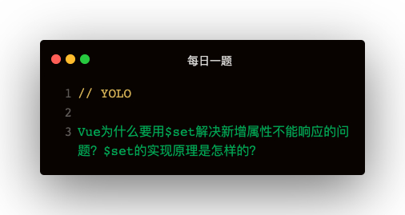

解答：
是因为Vue在实例化的过程中就需要对data中的数据使用defineProperty方法来定义存取器实现的响应式。
而直接新增属性因为仍是值属性，所以是不能实现响应式的
源码实现
const isValidArrayIndex = index => {
return index > 0 && Math.floor(index) === index && isFinite(index)
}
exprt function set (target, key, val) {
if (Array.isArray(target) && isValidArrayIndex(key)) {
target.length = Math.max(target.length, key)
target.splice(key, 1, val)
return val
}
if (key in target && !(key in target.prototype)) {
target[key] = val
return val
}
const __ob__ = target.__ob__
if (!__ob__) {
target[key] = val
return val
} else {
defineReactive(__ob__.value, key, val)
__ob__.dep.notify()
return val
}
}
set分为四步骤：
- 判断是否为数组，以及索引是否合法
- Array.isArray判断target是否为数组
- 索引是否合法：index > 0 && Math.floor(index) === index && isFinite(index)
- 数组可能不够长，先把数组扩充下：target.length = Math.max(target.length, key)
- 通过splice往数组中添加：target.splice(key, 1, val)
- 判断target对象下是否已经该属性key
- 存在的话就是修改操作，直接target[key] = val，通过setter存取器触发notify
- target是否已被响应式
- 否：不管响应式，target[key] = val完事
- 已设置响应式，defineReactive(ob.value, key, val), ob.dep.notify()触发更新
defineProperty的缺点
从这个问题可以看出：defineProperty实现响应式，需要在vue实例化时对所有属性进行重定义，不然的话就不能实现响应式
有点类似事件绑定时，对单个节点
Proxy的使用
let obj = { a: 1, b: 2 }
let obj1 = new Proxy(obj, {
get (obj, prop) {
console.log(`正在获取属性：${prop}，值为：${obj[prop]}`)
return obj[prop]
}
})
obj1.a
obj1.b
Proxy类似事件委托，把属性访问委托到另一个对象上，可是不具体关心是什么属性，所以在Vue实例化阶段减少了对data下所有属性进行defineProperty定义存取器